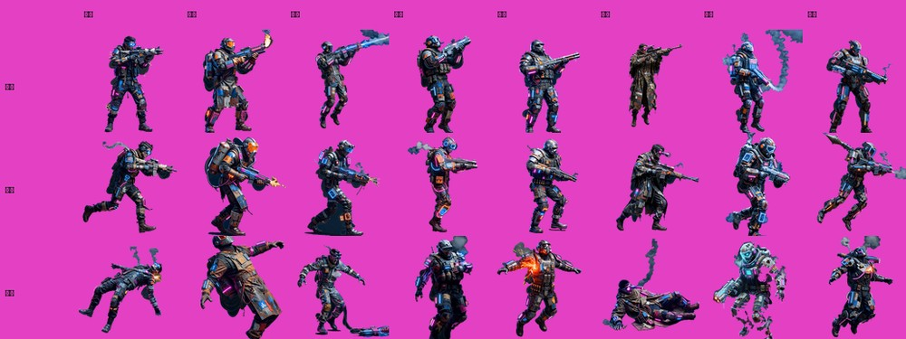
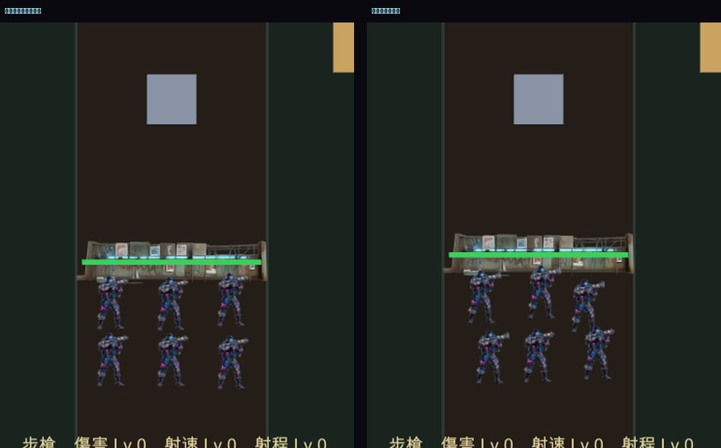

24 支全貌

八種兵種 × 射擊／移動／陣亡
實機

六名槍手排在護欄後方射擊（左）／陣亡動畫播放中（右）
- 換裝
- 八種武器全部驗過：
有素材=6/6，切換即時生效
- 狀態切換
- 換道滑行中 →
move；滑行結束 → fire；人數減少 → die
- 陣亡
- 小隊 6 → 4 人時，場上槍手沒有立刻從 6 變 4——先播 0.7 秒動畫，播完才移除
- 例外
- 0
縮放倍率我又猜錯了一次
- 第一版憑感覺寫「素材有留白，放大 2.6 倍」，結果槍手大了 2.4 倍——六個人互相重疊還溢出車道。
- 量了 189 幀的著墨比例中位數是 93.8%，正確倍率是 1/0.938 = 1.07。
- 跟護欄那次同一個教訓：跟素材有關的數字要用量的，不能挑一個。已寫成具名常數
ArtScale 並註明重量方法。
花費
- 補完 7 支陣亡 $2.24 ｜ 槍手全批合計 $8.32
- 累計美術 $14.72 ｜ Grok 額度正常